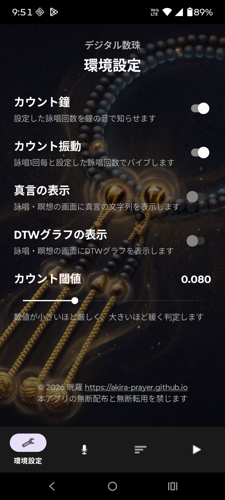
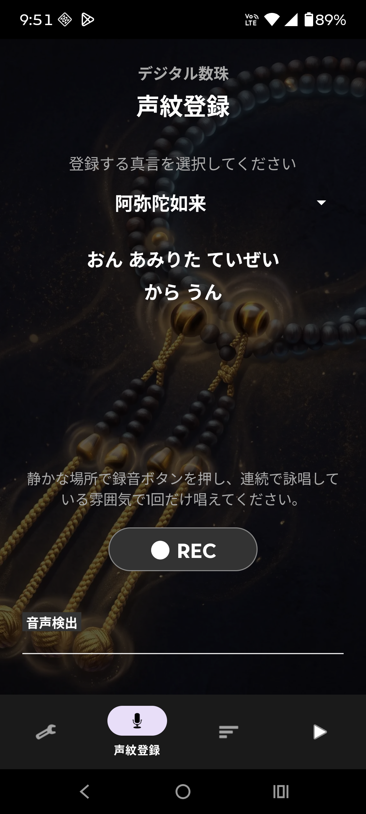
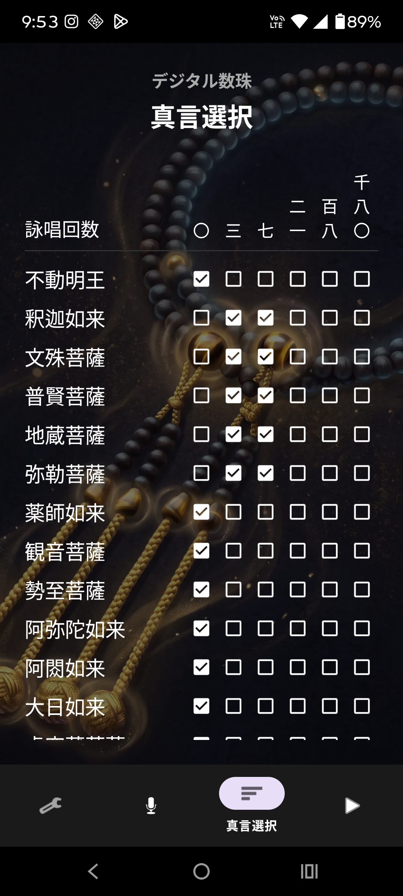
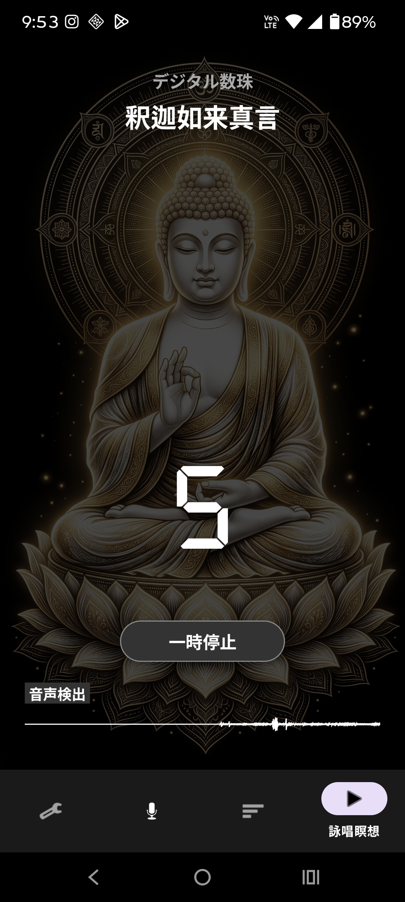

真言・経文の詠唱
セルフ浄霊アプリ
真言やお経を暗唱しお唱えに集中するためのアプリ。
真言やお経を暗記しお唱えに集中するスマホアプリです。自身の声で唱えて霊力を高め、穢れを浄化していきましょう。
振ると錫杖、タップでおりんやティンシャの音が鳴ります。経典をタップすると、経文の一部が隠れて記憶を促す暗唱モードになります。音は浄霊師ジャスミン様より提供頂きました。師のお唱え動画も参考にしましょう。
アプリへのリンク
スクリーンショット


操作動画
インストール方法
【Webアプリの場合】
※ブラウザからスマホのホーム画面に追加して使います。
- Android（Chrome）： 画面右上の「︙（メニュー）」をタップ ＞ ［ホーム画面に追加］ を選ぶ ＞ ［追加］をタップします。
- iPhone（Safari）： 画面下の「□↑（共有ボタン）」をタップ ＞ 少し下にスクロールして ［ホーム画面に追加］ ＞ ［追加］をタップします。
【Androidネイティブアプリの場合】
※Google Playストアを通さないため、スマホの防犯機能でいくつか「警告」が出ますが、以下の手順で安全にインストールできます。
- 上の「ネイティブアプリ」のリンクをタップします。
- 「この種類のファイルはお使いのデバイスに悪影響を与える…」などの警告が出ても、「OK」や「ダウンロードを続行」を選んでください。
- ダウンロードが完了したら、そのファイル（self_jyourei_v...apk）をタップして開きます。
- 「セキュリティ上の理由から…不明なアプリをインストールすることはできません」と出た場合は、「設定」をタップします。
- 「この提供元のアプリを許可」のスイッチをオン（色が付く状態）にします。
- スマホの「戻る」ボタンで一つ前の画面に戻り、「インストール」をタップすれば完了です。
※無事にインストールできた後は、安全のため手順5の「アプリを許可」のスイッチをオフに戻しておくことをお薦めします。
更新履歴
- 2026/02/01 : 十三仏真言に制限したWebAppをGitHubにてデプロイ。
- 2026/03/14 : 3軸合成＋ゼロクロス検出仕様のAndroidApp.v2.0をGitHubReleasesにて公開。
デジタル数珠アプリ
真言の詠唱回数をカウントして音と振動でナビゲートしてくれるアプリ。
真言の詠唱回数をカウントして音と振動でナビゲートしてくれるアプリです。連続で沢山唱えて瞑想する際にも使えます。
ご存じの方も多いと思いますが、仏教徒アイテムである数珠（念珠）は、唱えながら指で珠を送って数えるためのツールです。でも慣れないと集中力を取られてしまうのと、瞑想状態に浸ると出来にくいのが難点です。
南アジアの国々では、万歩計の様なツールや、タップでカウントしてくれるアプリも出回っていますが、ハンズフリーに拘り「声」を拾ってカウントしてくれるスマホアプリを開発しました。
インストール後に、自分の詠唱を記憶させる※のと、判定閾値を調整する必要がありますが、その手軽さを体験し、日々のお唱えに利用ください。
※巷にはAlexaやSiriなど音声認識してくれるツールが溢れていますが、英語や日本語などの音声モデルはあってもサンスクリット語のモデルは無いので、個々で登録が必要です。
おまけ機能として特別なアルゴリズムを実装し、声紋に霊力が検出されたら、背景画が七色に変化します。また環境に制約があって大声で詠唱出来ない場合は、画面のタップでもカウントが進み、回数をバイブで知る事が可能です。
アプリへのリンク
スクリーンショット




操作動画
インストール方法
【Androidネイティブアプリの場合】
※Google Playストアを通さないため、スマホの防犯機能でいくつか「警告」が出ますが、以下の手順で安全にインストールできます。
- 上の「ネイティブアプリ」のリンクをタップします。
- 「この種類のファイルはお使いのデバイスに悪影響を与える…」などの警告が出ても、「OK」や「ダウンロードを続行」を選んでください。
- ダウンロードが完了したら、そのファイル（self_jyourei_v...apk）をタップして開きます。
- 「セキュリティ上の理由から…不明なアプリをインストールすることはできません」と出た場合は、「設定」をタップします。
- 「この提供元のアプリを許可」のスイッチをオン（色が付く状態）にします。
- スマホの「戻る」ボタンで一つ前の画面に戻り、「インストール」をタップすれば完了です。
※無事にインストールできた後は、安全のため手順5の「アプリを許可」のスイッチをオフに戻しておくことをお薦めします。
更新履歴
- 2026/09/30 : v1.0 をGitHubReleasesにて公開。
- （お願い）諸事情で私個人でのデバッグと検証しか出来ていません。どうか性能や使い勝手の感想をお寄せいただき改善にご協力ください。また本アプリは、音声認識に演算処理が必要でandroid用ネイティブアプリでの提供です。タップカウント機能だけであればWebアプリ形式の提供も可能ですのでリクエストをお寄せください。
（第３弾アプリ）
※現在構想中。リクエストやアイデアをお寄せください。